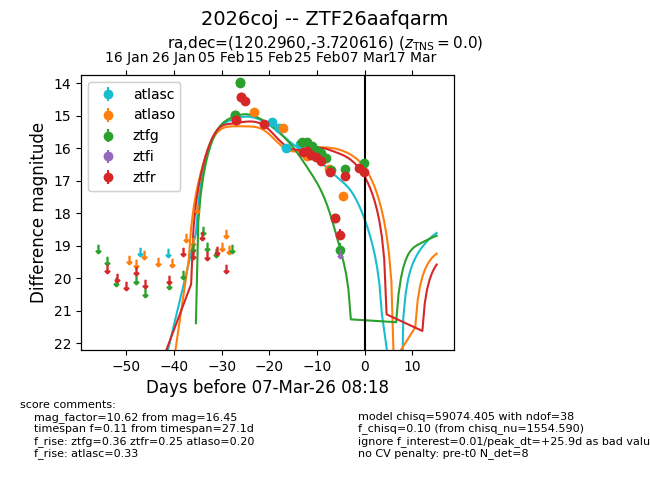
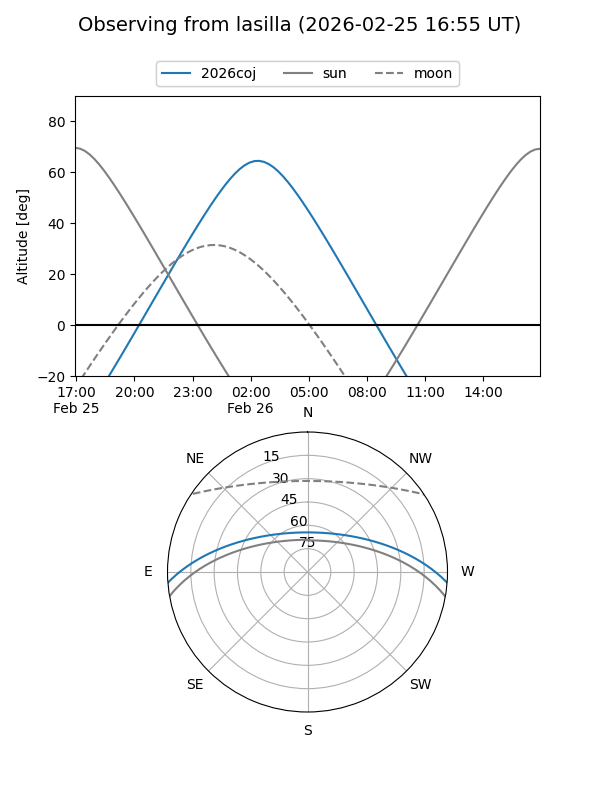
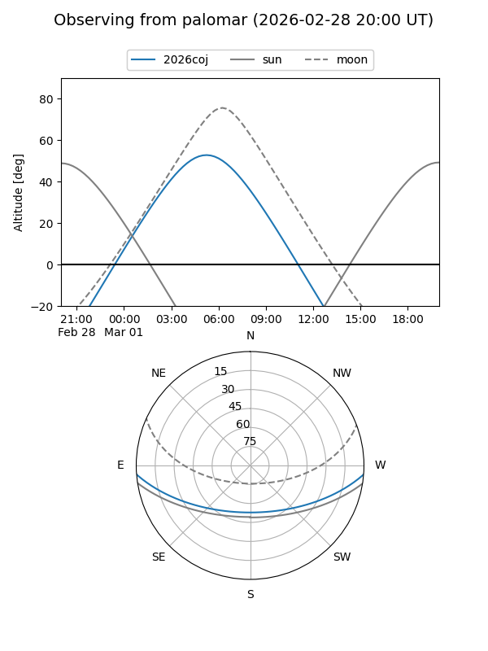
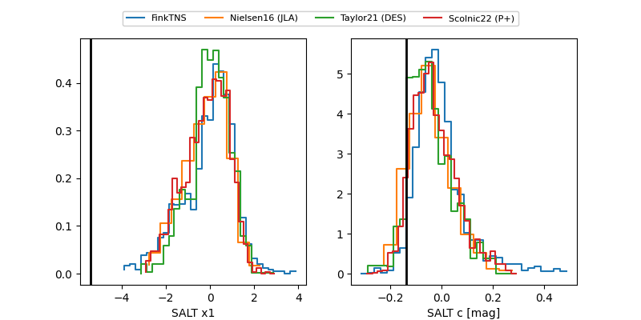

2026coj
Target 2026coj at 2026-03-07 08:19
Aliases and brokers:
FINK: link
Lasair: link
ALeRCE: link
TNS: link
YSE: link
alt names
ZTF26aafqarm (ztf,fink_ztf)
2026coj (tns,yse)
Coordinates:
equatorial (ra, dec) = 120.2960,-3.72062
equatorial (HMS+DMS) = 08:01:11.03,-03:43:14.22
galactic (l, b) = (224.4553,+13.68195)
Flags:
Photometry:
last atlasc=15.87, atlaso=17.47, ztfg=16.45, ztfr=16.72
4 atlasc, 6 atlaso, 15 ztfg, 17 ztfr detections
Lightcurve

Visibility


Additional plots
